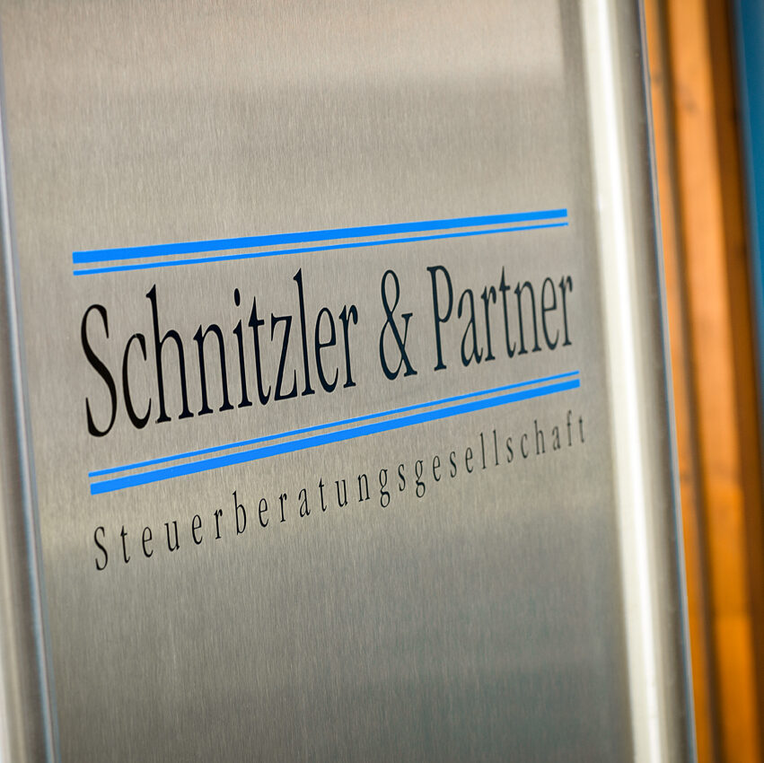

Werden Sie ein Teil von uns.
Unsere Mitarbeiter tragen maßgeblich zum Erfolg unserer Kanzlei bei.
Unsere Mitarbeiter tragen maßgeblich zum Erfolg unserer Kanzlei bei
Uns als Partnern ist bewusst, dass unsere überdurchschnittlich fachlich qualifizierten Mitarbeiter ein wichtiger Bestandteil unseres Praxiserfolges sind. Dies fördern wir, indem wir optimale Arbeitsmittel bereitstellen und jeden Einzelnen individuell fordern, ohne aber den Teamgeist aus den Augen zu verlieren.
Deswegen legen wir bei der Auswahl neuer Mitarbeiter sehr großen Wert auf fachliche Kompetenz einerseits, aber eben auch menschlich ins Team passende Kräfte andererseits.
Wenn Du diese Wertvorstellungen zum Wohl unserer Mandanten mit Deinen Ideen kombinieren möchtest, erwarten wir voller Spannung Deine Bewerbung.
Werden Sie ein Teil von uns.
Ihre Bewerbung - gerne auch per Mail - senden Sie bitte an Herrn Andreas Bartkowski, kanzlei[at]schnitzler-partner.de oder per Post an: Schnitzler & Partner, Konstantinstraße 58 / Hof 3, 41239 Mönchengladbach